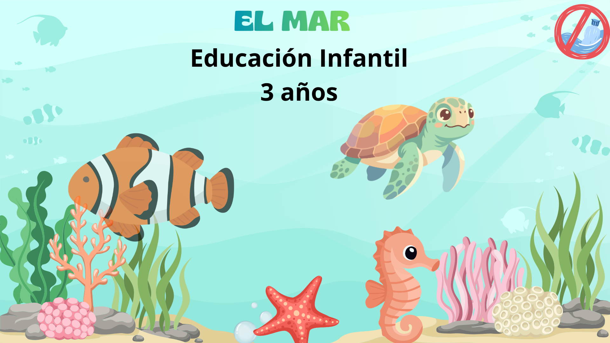

BIENVENIDOS
En esta sección se presenta la Situación de Aprendizaje titulada “El mar”, dirigida al niños y niñas de 3 años de Educación Infantil. A lo largo de esta propuesta se recogen las diferentes actividades, recursos y experiencias. Así mismo, se mostrará la organización de la secuencia didáctica, así como los elementos principales que la componen, facilitando una visión global del trabajo que se desarrollará en el aula.
Os animo a seguir descubriendo y adentraros en las profundidades de “El mar”, un viaje lleno de aprendizaje, curiosidad y diversión.
